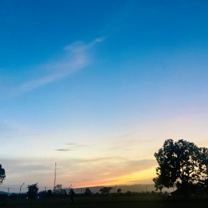

Jos, which is where I live is the beautiful city of Plateau State, Nigeria! Located in the heart of West Africa, Jos is a bustling metropolis surrounded by rolling hills and verdant valleys. Known as the "Tourist Capital of Nigeria", Jos is renowned for its picturesque landscapes, rich cultural heritage, and warm hospitality. The city is a melting pot of different ethnic groups, with a blend of Nigerian and British colonial architecture adding to its charm. From the bustling markets to the serene countryside, Jos offers a unique experience that is both vibrant and peaceful.